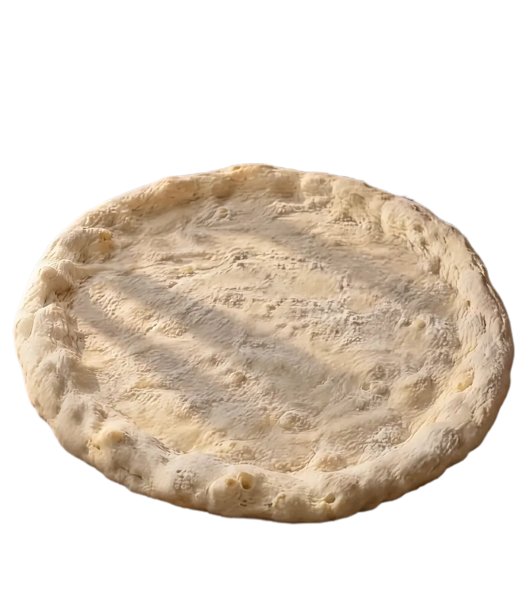
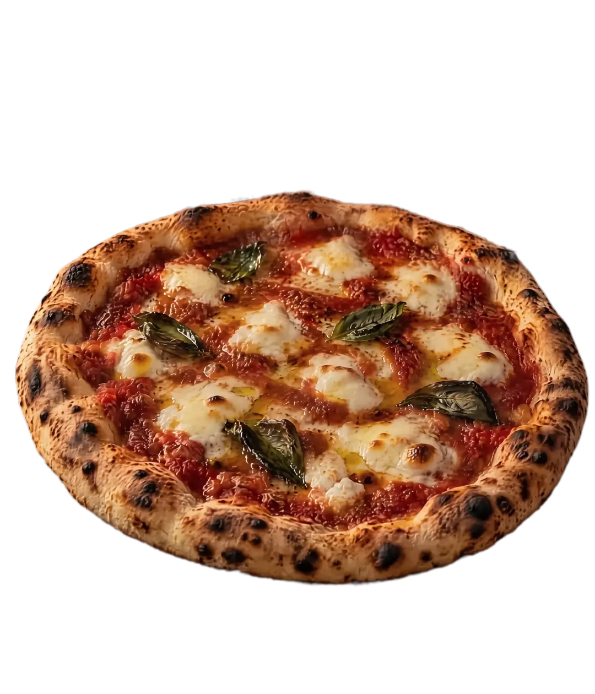
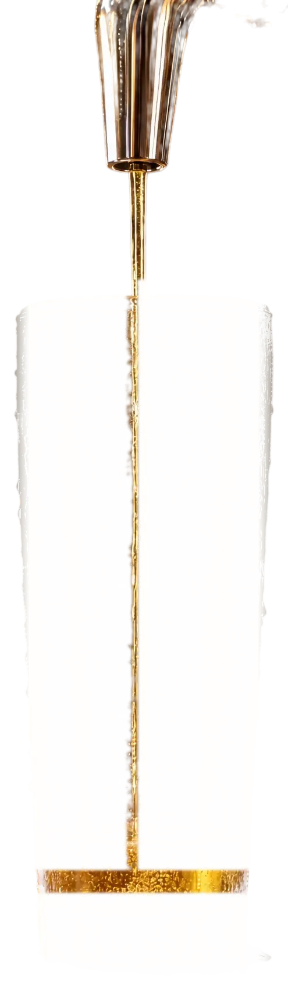
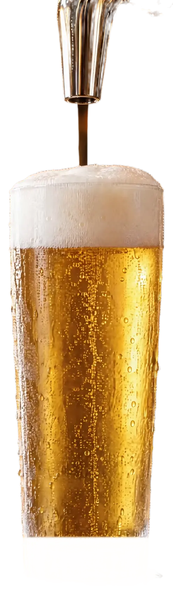

imagem ilustrativa · gerada por IA
A noite começa cedo.
Pizza saindo do forno, chope gelado com colarinho e a turma chegando. No Rio Tavares, em Floripa.
- 01
Massa.
Fina no centro, borda alta.
- 02
Molho.
Em espiral, do centro pra borda.
- 03
Muçarela.
Rasgada, com folhas de manjericão.
- 04
Forno.
A borda cresce, ganha pintas, e o queijo derrete.
Pronta.
Agora é só pedir a sua.
Pedir a minha no WhatsApp→


imagem ilustrativa · gerada por IA
O outro lado da mesa
Gelado.
Copo limpo, chope dourado.
Subindo.
Bolha fina, sem pressa.
Colarinho.
Espuma branca no ponto. Saúde.
Como é a noite
Chega cedo. Sai tarde.
- 18:01
A porta abre.
Um minuto depois das seis. Detalhe que já diz muito sobre a casa.
- depois
A mesa enche.
Pizza no meio, copos batendo, alguém pedindo mais uma rodada.
- 01:37
Ainda dá tempo.
A noite no Rio Tavares vai longe. Sem pressa pra ir embora.
Horário tirado da bio do Instagram · a confirmar com a casa.
Quem passa por aqui sempre fala do atendimento. A gente gosta de receber.